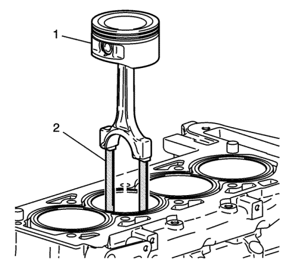
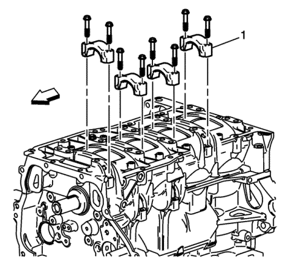
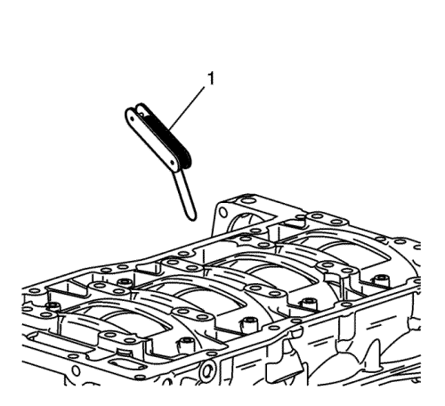

Montaje de pistón, biela y cojinete — LAF, LAT, LE5, LE9
Herramientas especiales
| • | EN-43966 Guías de biela |
| • | EN 45059 Medidor de ángulos |
| • | EN-47836 Compresor de segmentos de pistón |
Si desea informarse sobre herramientas regionales equivalentes, consultar Herramientas especiales .

- Monte los cojinetes de las varillas de unión. Utilice cojinetes NUEVOS.
| 1.1. | Monte las piezas suplementarias del cojinete en la biela y el sombrerete de la biela. |
| 1.2. | Lubrique los cojinetes de la biela con aceite de motor. |
- Monte la guías (1) EN-43966 en los orificios de tornillos de la biela. Protegerán al muñón del cigüeñal cuando se monte la biela y el pistón.
- Monte el compresor EN-47836, el pistón y la biela en el orificio correcto.
| 3.1. | Desfase cada orificio final del segmento de pistón en torno a éste. |
| 3.2. | Lubrique el pistón y los segmentos de pistón con aceite de motor. |
| 3.3. | No altere la ubicación del orificio final del segmento de pistón. |
| 3.4. | El pistón deberá estar montado de tal manera que la marca de la parte superior del pistón esté mirando a la parte delantera del motor. |
| 3.5. | Coloque el pistón en su orificio correspondiente. |
| 3.6. | Introduzca el pistón en su orificio con un martillo. Guíe la biela al muñón de biela mientras coloca el pistón en su sitio. |
| 3.7. | Sostenga el compresor EN-47836 contra el bloque motor hasta que todos los segmentos hayan entrado en el orificio del cilindro. |
| 3.8. | Retire las guías de la biela de los orificios del tornillo de la biela. |

Nota: Cerciórese de que el sombrerete de la biela está orientado correctamente en ésta.
- Monte el sombrerete (1) de la biela.
Precaución: Consulte Precaución con las fijaciones en la sección Prólogo
- Monte los pernos de la varilla de unión. Use siempre tornillos nuevos. Apriete los tornillos de la varilla de unión hasta 25 N·m (18 lib. pie) más 100 grados utilizando el medidor EN 45059.
- Monte el resto de conjuntos de bielas y pistones.

- Mida la holgura lateral de la biela con una galga (1).
La holgura correcta es 0,07–0,37 mm (0,0027–0,0145 pulg.)
| © Copyright Chevrolet Europe. All rights reserved |